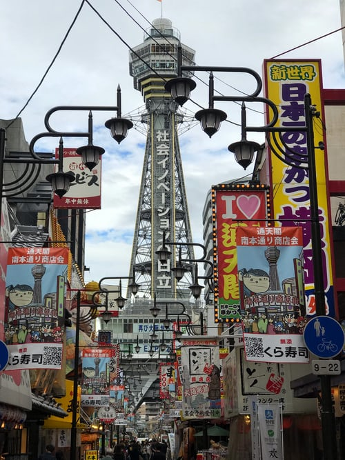

Osaka is a designated city in the Kansai region of Honshu in Japan.
It is the capital city of Osaka Prefecture and the largest component of the Keihanshin Metropolitan Area,
the second largest metropolitan area in Japan and among the largest in the world with more than 20 million inhabitants.